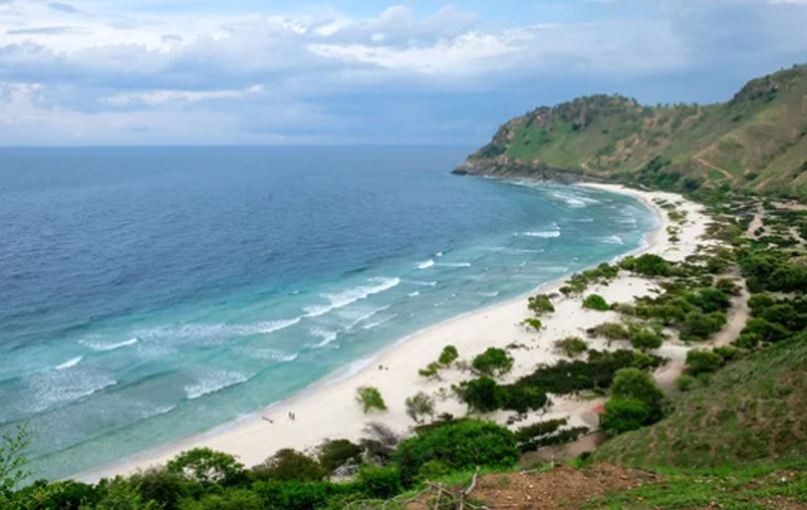
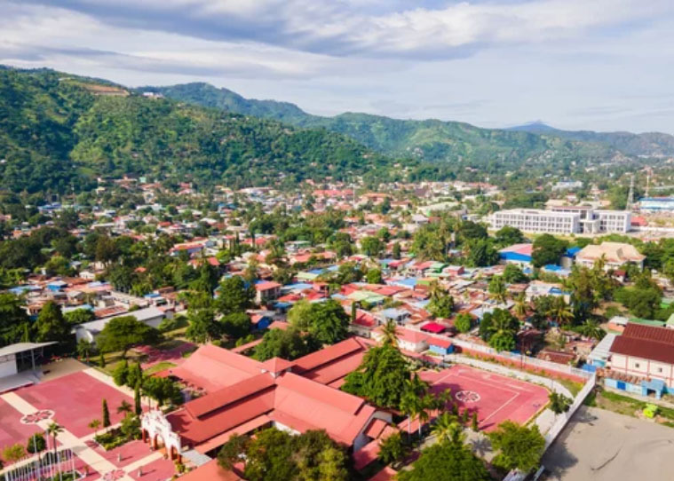
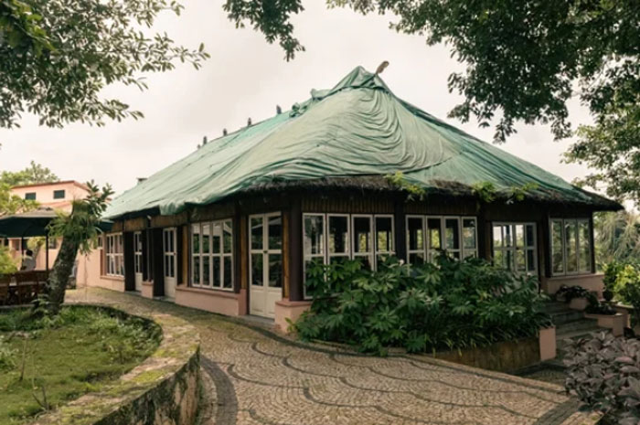
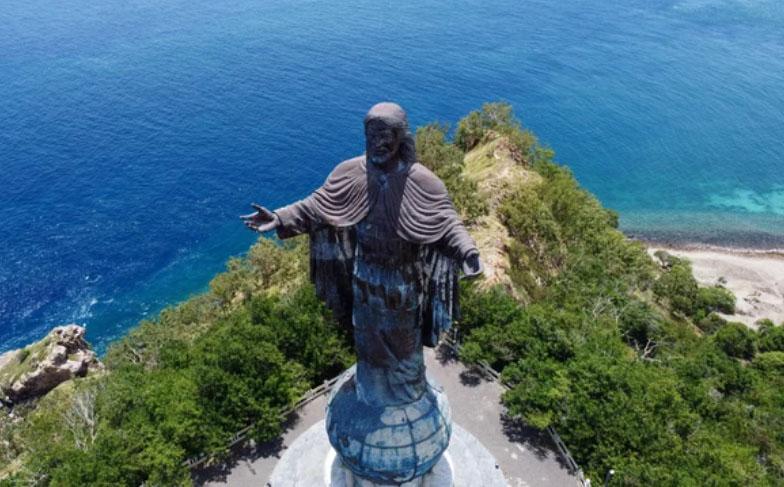
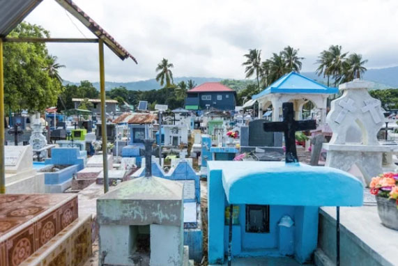
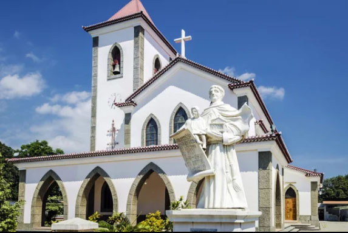
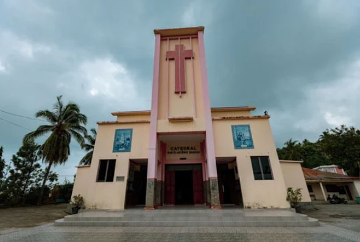
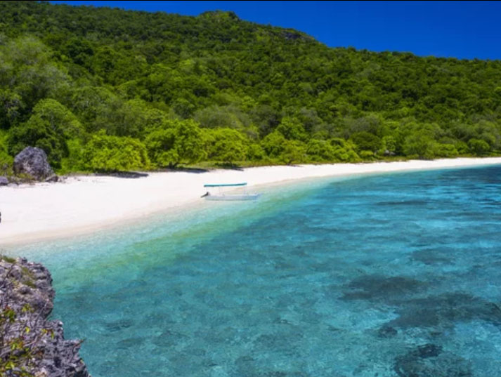
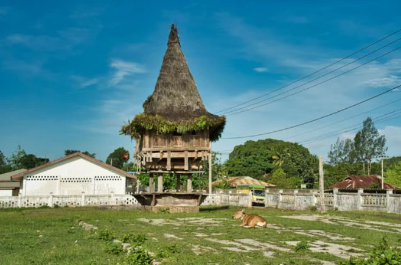

Discover the Untouched
East Timor: Where Tradition Meets the Sea
Journey to the heart of Southeast Asia's newest nation. From sacred mountains to pristine reefs, experience a land where time slows down.
A Land of Living Wonders
Iconic Landmarks
From untamed mountains rising above the sea to sacred shores shaped by faith and time, discover a land where nature and spirit quietly endure in every horizon.

Atauro Island
Experience the most biodiverse waters on the planet. A sanctuary for divers and those seeking total immersion in nature.

Jaco Island
A sacred, uninhabited paradise where the white sands meet the most brilliant turquoise waters you’ve ever seen.

Mount Ramelau
Summit the sacred 'Tatavailau' for a sunrise view that stretches across the entire island.
Where History and Nature Meet
Cities
From the timeless whispers of historic souks to the vibrant pulse of futuristic metropolises, experience a visionary world where tradition meets luxury.

Dili
Dili unfolds along a calm coastline where the mountains gently meet the sea. As the capital of Timor-Leste, it carries both the weight of history and the quiet rhythm of everyday life. Here, ocean views, colonial echoes, and a growing city spirit coexist in a uniquely understated harmony.

Baucau
Perched above the coast in the cool highlands of eastern Timor-Leste, Baucau offers a quieter rhythm of life shaped by mountains, markets, and community. Colonial echoes blend with rural simplicity, where local traditions continue in the shadow of sweeping green landscapes and open skies.
A Journey Through Timor-Leste
Places
Explore the landmarks that capture the essence of Timor-Leste—from ancient traditions and places of remembrance to iconic churches and tranquil beaches, each offering a unique glimpse into the nation's soul.






The Heart of Timorese Flavor
Timorese cuisine is a vibrant tapestry woven from indigenous roots, Portuguese influence, and Southeast Asian proximity. From the smoky depths of highland coffee to the zesty fire of grilled Ikan Sabuko, every dish tells a story of resilience and community.

Ikan Sabuko
Mackerel or snapper marinated in a spicy blend of tamarind, chili, and basil, then grilled over open flames for a smokey, zesty finish.

Caldeirada
A Portuguese-influenced rich stew made with goat meat or beef, simmered slowly with tomatoes, peppers, and local spices.

Highland Coffee
World-renowned organic Arabica grown in the high altitudes of Maubisse and Ermera. Known for its smooth, dark, earthy profile.
東ティモール民主共和国の歴史
The Democratic Republic of Timor-Leste
Journey through centuries of resilience, from ancient kingdoms and Portuguese rule to the struggle for independence.Timor-Leste's history is a story of courage, identity, and hope for the future.
古代
パプア系民族が定住（紀元前2000年頃）
紀元前2000年頃、パプア系の人々が移住し、独自の文化を形成しました。 紀元10世紀頃にはオーストロネシア系の人々が流入し、農耕や交易が発展しました。
オーストロネシア系民族が移住 （紀元前1000年～紀元10世紀頃）
統一国家は形成されず、多数の小王国（Liurai王国）が各地に存在していました。
中世
リウライ王国 （16世紀以前）
中世には「リウライ」と呼ばれる地方の首長や小王国が存在し、地域ごとに分立していました。 この時期、白檀（サンダルウッド）の交易が盛んで、外部との接触が増えました。
近世
白檀貿易と植民地時代 （16世紀前半〜20世紀）
16世紀にポルトガルが到来し、白檀の交易を目的に植民地化が進みました。
16世紀前半〜20世紀：ポルトガルが進出して以降も、リウライによる伝統的な統治システムは存続しました。植民地政府は彼らを介した「間接統治」を行い、自治権を残しながら地域をコントロールしていました。
1658年：オランダが西ティモールを占領オランダが先に島の西側（クーパンなど）に拠点を築き、支配を始めました。
1701年：ポルトガル、ティモール全島を領有。
ポルトガルが初代総督を派遣し、一度は島全体の主権（領有権）を主張・布告しました。しかし、西側にはすでにオランダが深く入り込んでいたため、実際には島の中でポルトガルとオランダの勢力争いや衝突が激しく続くことになります。
1859年：リスボン条約
東西を正式に分割長年の紛争に決着をつけるため、両国間で初の正式な国境画定条約（リスボン条約）が結ばれました。これにより、ポルトガルがそれまで主張していた「全島の領有権」を放棄し、ティモール島は東西に分割され、東ティモールはポルトガル領、西ティモールはオランダ領となりました。
近現代・現代
日本軍による全島占領 （1942年 - 1945年）
第二次世界大戦中、日本軍が島全体を一時的に占領しましたが、戦後、東側は再びポルトガルの支配下に戻った一方、西側ではオランダが支配権を再構築しようとしたものの、インドネシア独立戦争へと突入していきました。
1945年〜1949年 （1945年〜1949年）
1945年（大戦終結）：日本が敗戦し、ティモール島から撤退。西側にはオランダ軍が戻り、再び植民地支配を始めようとしました。
1945年8月：ジャカルタでスカルノらが「インドネシア共和国」の独立を宣言。
1945年〜1949年（インドネシア独立戦争）：宗主国オランダと、独立を目指すインドネシアとの間で激しい戦争が勃発。西ティモールもこの渦中に巻き込まれます。
1949年（オランダ撤退・独立決定）：オランダが敗北を認め、インドネシアの独立が国際的に承認されます（ハーグ協定）。これにより、オランダ領だった西ティモールは正式にインドネシアの一部となりました。
「西側」と「東側」の年表まとめ
大戦後に西側はインドネシアとして独立（1949年）、東側は1975年までポルトガル領（その後インドネシアの実効支配を経て2002年独立）として、20世紀後半までポルトガル・オランダの影響が続きました。
1975年にポルトガルからの独立を宣言しましたが、直後にインドネシアが侵攻し、1976年にインドネシアの一部として併合されました。
1999年、国連監視下で住民投票が行われ、独立が支持されました。
西側（西ティモール）の流れ
1859年 リスボン条約でオランダ領に
1942年 - 1945年：日本軍による占領。
1945年 - 1949年：大戦後、再び支配を試みるオランダと、独立を目指すインドネシアとの間で独立戦争が勃発。
1949年：インドネシアとして正式に独立。以降はインドネシア領（東ヌサ・トゥンガラ州）となる。
東側（東ティモール）の流れ
1859年 リスボン条約でポルトガル領に
1942年 - 1945年：日本軍による占領。
1945年 - 1975年：大戦後、ポルトガル領へ復帰。
1975年までポルトガルによる植民地支配が続く。
1975年：ポルトガルからの独立を宣言。しかし直後にインドネシアが侵攻。
1976年：インドネシアの27番目の州として強制的に併合される（実効支配の始まり）。
1999年：国連監視下で住民投票が行われ、インドネシアからの分離独立が圧倒的多数で支持されました。（その後、多国籍軍の派遣や国連による暫定統治へ移行）
2002年：「東ティモール民主共和国」として正式に独立。
東ティモール民主共和国独立回復 （2002年 - 現在）
2002年、東ティモールは正式に独立し、「東ティモール民主共和国」として現在に至ります。 このように、東ティモールの歴史は外部勢力との関わりや独立運動を通じて形成されてきました。
東ティモール紛争は、ポルトガル植民地時代から独立に至るまでの複雑な歴史を持つ紛争です。以下にその概要を説明します
ポルトガル植民地時代
東ティモールは16世紀からポルトガルの植民地となり、白檀（サンダルウッド）の交易が主要な経済活動でした。 1974年、ポルトガル本国でカーネーション革命が起こり、植民地政策の見直しが進みました。この結果、東ティモールでも独立運動が活発化しました。
独立宣言と内戦
1975年、東ティモール独立革命戦線（FRETILIN）が独立を宣言しましたが、これに反対する勢力との間で内戦が勃発しました。
この混乱を利用して、インドネシアが軍事介入を行い、1976年に東ティモールをインドネシアの一部として併合しました。
インドネシア統治下の抵抗
インドネシアの統治下では、東ティモールの住民に対する人権侵害が広く報告され、約20万人が犠牲になったとされています。
国際社会からの圧力や東ティモール住民の抵抗運動が続きました。
サンタクルス事件（インドネシア軍による独立派虐殺事件）
1991年11月12日、インドネシア支配下の東ティモール・ディリで起きた大量虐殺事件。インドネシア国軍が、独立を求めるデモ行進を行っていた市民に対して無差別に発砲し、大量の死傷者を出した。サンタクルス虐殺や、ディリ事件（Dili massacre）とも呼ばれる。
独立への道
1999年、国連監視下で住民投票が行われ、独立が支持されました。しかし、投票後に暴力が激化し、多国籍軍が介入しました。
2002年、東ティモールは正式に独立し、「東ティモール民主共和国」として新たなスタートを切りました。 この紛争は、植民地支配、冷戦時代の国際政治、そして住民の独立への強い意志が絡み合った複雑な歴史を持っています。
何故独立回復なのか？
初の独立（1975年11月28日）
ポルトガルが撤退した直後、東ティモールは「東ティモール民主共和国」として一度独立を宣言しました。
インドネシアによる占領（1975年12月〜1999年）
独立を宣言したわずか9日後、インドネシア軍が侵攻し、翌年強制的に併合しました。
独立「回復」（2002年5月20日）
国連の支援などを経て、2002年に再び主権を取り戻しました。東ティモールにとって、2002年は「新しく独立した年」ではなく、「1975年の独立をようやく取り戻した年」なのです。
この歴史的認識は、現在の東ティモールの公式な祝日にもはっきりと現れています。
11月28日：主権宣言記念日（1975年の最初の独立）
5月20日：独立回復記念日（2002年の主権回復）
「亡命組（外派）」と「国内抵抗組（内派）」の分断
東ティモールにおける「亡命組（外派）」と「国内抵抗組（内派）」の分断は、1975年から1999年に及ぶインドネシア占領期 の闘争スタイルの違いに端を発し、2002年の独立以降、国家の統治機構や権力闘争、言語政策などに深刻な対立をもたらした構造的問題です。
亡命組：マリ・アルカティリ（初代首相）、ジョゼ・ラモス＝ホルタ（現大統領）など。
国内抵抗組：シャナナ・グスマン（現首相、元ゲリラ最高司令官）、タウル・マタン・ルアクなど。
2002年独立時のツートップ
初代大統領：シャナナ・グスマン氏 役割：独立闘争のカリスマ的ゲリラ指導者（国家の象徴・精神的支柱）。
初代首相：マリ・アルカティリ氏 役割：独立革命戦線（フレティリン）の書記長で、実務を取り仕切る政府のトップ（首相）。
分断が表面化した主な論点
➀力とポストの配分（不満の蓄積）：独立準備期から独立直後にかけて、国連暫定統治機構（UNTAET）との交渉や初期の政府高官ポスト（特に閣僚など）の多くを、実務や英語・ポルトガル語に長けた亡命組（政党フレティリンの主流派）が独占しました。これに対し、国内で犠牲を払って戦い続けた元ゲリラ兵や国内抵抗組は「自分たちが蚊帳の外に置かれた」と激しい不満を抱くことになりました。
➁言語政策をめぐる「世代・文化の断絶」：亡命組が主導した憲法制定において、公用語としてポルトガル語とテトゥン語が採択されました。しかし、24年間のインドネシア占領期に国内で育った若い世代（国内派）はポルトガル語が使えず、インドネシア語教育を受けていました。このため、ポルトガル語の公用語化は「亡命エリートによる若者や国内派の排除・就職制限」と受け止められ、深刻な世代・派閥間対立を生みました。
➂国軍（F-FDTL）と警察（PNTL）の対立
分断がもたらした最大の危機：2006年東ティモール危機（暴動）
国軍内の西部出身兵士が「東部出身の幹部から差別を受けている」と抗議して集団離隊（ストライキ）した際、亡命組のアルカティリ首相（当時）が彼らを大量解雇しました。これが引き金となり、国軍と警察が市街戦を展開する大暴動へと発展。ディリの治安は崩壊し、多くの市民が国内外へ避難、アルカティリ首相は引責辞任に追い込まれました。国内抵抗組の英雄であるシャナナ・グスマンやラモス＝ホルタが事態の収拾にあたりました。
現在の状況
独立から20年以上が経過し、シャナナ・グスマン氏（CNRT）とマリ・アルカティリ氏（フレティリン）の二大巨頭による政権交代や連立の合従連衡 を経て、武力衝突を伴うような激しい対立は沈静化しています。
歴史の全体像を見ると、アルカティリ氏ら「亡命組」が海外にいたからこそ、東ティモールは独立できたという側面もあります。
亡命組（アルカティリ氏ら）が海外で果たした「もう一つの戦争」
国際社会への必死のアピール：アルカティリ氏らは同じポルトガル語圏であるアフリカのモザンビークなどに拠点を置き、国連やヨーロッパの国々に対して「今、東ティモールで大虐殺が起きている！助けてくれ！」と24年間、毎日ロビー活動（訴えかけ）を続けました。
国連を動かした外交戦：1999年に「国連監視下の住民投票」が実現したのは、彼らが国際社会を味方につけ、インドネシアに国際的なプレッシャーをかけ続けた成果でした。
「国内で血を流した男」と「海外で頭脳を使った男」のコンビ
国内組の英雄：シャナナ・グスマン（国内でゲリラ戦を戦い、逮捕され服役した、国民全員の圧倒的なアイドル）
亡命組の知性：マリ・アルカティリ（海外の法律や外交、経済交渉に滅法強い実務家）
「ずるい」と言われながらも、アルカティリ氏のような法律や国際交渉のプロがいなければ、独立直後の国づくりや、隣国とのタフな国境交渉（特に石油の利権争いなど）は乗り越えられませんでした。
感情的には絶対に許しがたい不公平さがありつつも、国が生き残るためにはどちらの力も必要だった、というのが東ティモール建国の複雑でリアルな人間ドラマです。
現実の歴史の面白い（そして力強い）ところは、現在の東ティモールとインドネシアが「驚くほど良好な関係」を築いているという点にあります。
なぜ今、両国は仲良くできているのか？
「過去を非難するより、未来の平和」を選んだ大統領： 東ティモールの初代大統領であるシャナナ・グスマン（元ゲリラ指導者）や、ノーベル平和賞を受賞したホルヘ・ラモス・ホルタ大統領らは、「インドネシアを憎み続けても、小さな我が国は生きていけない」と考えました。彼らはあえて「報復ではなく和解」を呼びかけ、インドネシア側の謝罪を受け入れました。
経済的に依存せざるを得ない現実：東ティモールは小さな島国です。物資を輸入したり、経済を回したりするには、隣にある大国インドネシアと協力する方が圧倒的に得（というか不可欠）でした。現在も多くの東ティモール人がインドネシアへ留学やビジネスに行っています。
国際社会での強力なサポーターに：現在、東ティモールは東南アジア諸国連合（ASEAN）への正式加盟を目指していますが、それを一番熱心に後ろから応援し、後押ししてくれているのが、かつての支配国であるインドネシアです。
お互いの国のリーダーたちが血を流す歴史に終止符を打ち、ビジネスや平和のために手を握り合ったのは、国際政治の中でも「奇跡的な和解」と言われています。